Blackwood · Prueba de imágenes locales
512 × 512 píxeles. Mismos prompts y semillas 42/123. SDXS: 1 paso, guidance 0. SD1.5: 25 pasos, guidance 7.5. Tiempos con modelo cargado y una imagen de calentamiento excluida. Memoria de tensores CUDA asignada, no memoria total del proceso. Mediciones de escritorio: no predicen la velocidad en móvil.
SDXS
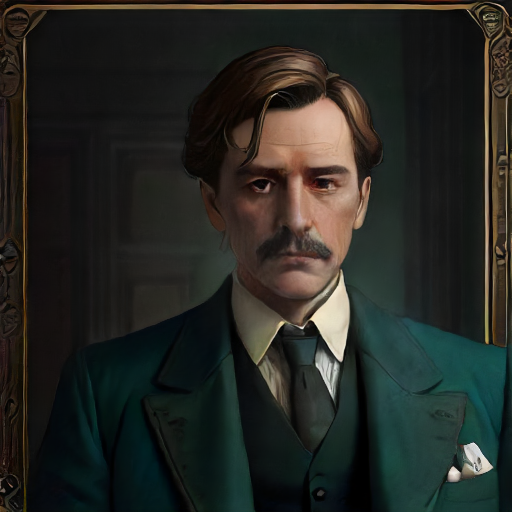
portrait · semilla 42
0.11 s · 1025 MiB
Victorian detective mystery, 1924 England, muted dark teal and warm brass palette, atmospheric cinematic illustration, no text, no letters, no watermark. Head and shoulders portrait of a stern middle-aged male doctor in a dark three-piece suit, white shirt, neatly combed brown hair, inside an English manor, single person.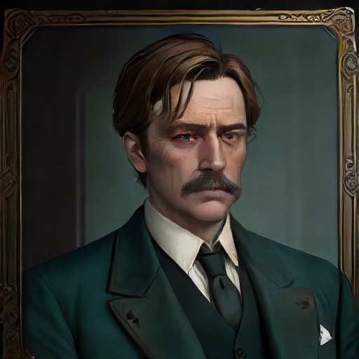
portrait · semilla 123
0.10 s · 1025 MiB
Victorian detective mystery, 1924 England, muted dark teal and warm brass palette, atmospheric cinematic illustration, no text, no letters, no watermark. Head and shoulders portrait of a stern middle-aged male doctor in a dark three-piece suit, white shirt, neatly combed brown hair, inside an English manor, single person.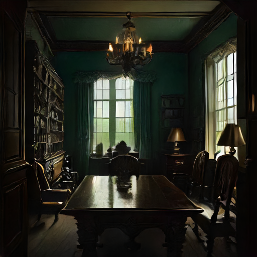
room · semilla 42
0.13 s · 1025 MiB
Victorian detective mystery, 1924 England, muted dark teal and warm brass palette, atmospheric cinematic illustration, no text, no letters, no watermark. An empty English manor study at night, mahogany desk, single porcelain teacup on desk, bookshelves, rain on tall windows, no people.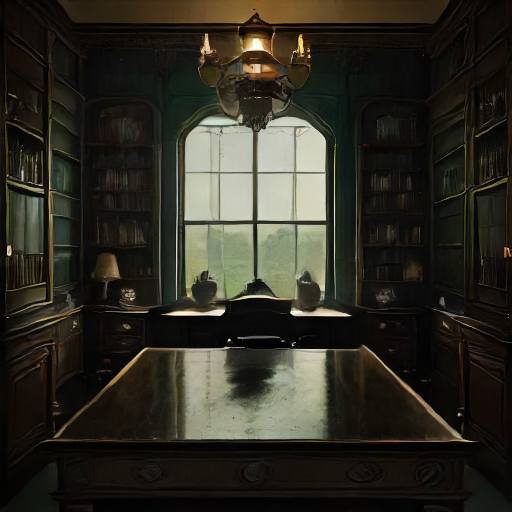
room · semilla 123
0.17 s · 1025 MiB
Victorian detective mystery, 1924 England, muted dark teal and warm brass palette, atmospheric cinematic illustration, no text, no letters, no watermark. An empty English manor study at night, mahogany desk, single porcelain teacup on desk, bookshelves, rain on tall windows, no people.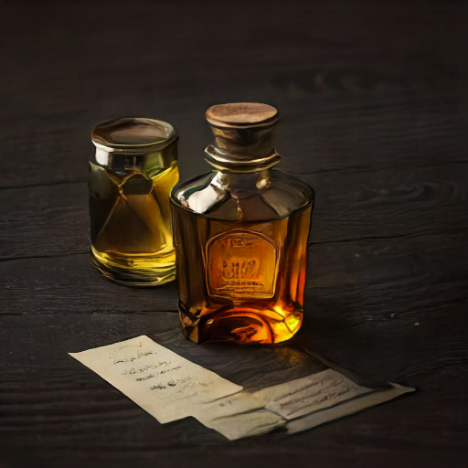
clue · semilla 42
0.10 s · 1025 MiB
Victorian detective mystery, 1924 England, muted dark teal and warm brass palette, atmospheric cinematic illustration, no text, no letters, no watermark. Evidence photograph, a single empty small amber glass medicine vial on a dark wooden table, centered isolated object, blank paper label, no writing.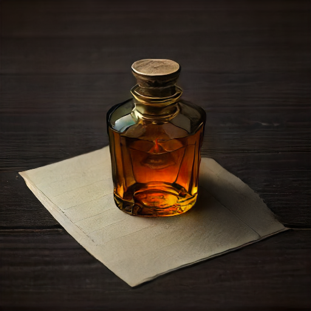
clue · semilla 123
0.09 s · 1025 MiB
Victorian detective mystery, 1924 England, muted dark teal and warm brass palette, atmospheric cinematic illustration, no text, no letters, no watermark. Evidence photograph, a single empty small amber glass medicine vial on a dark wooden table, centered isolated object, blank paper label, no writing.SD15
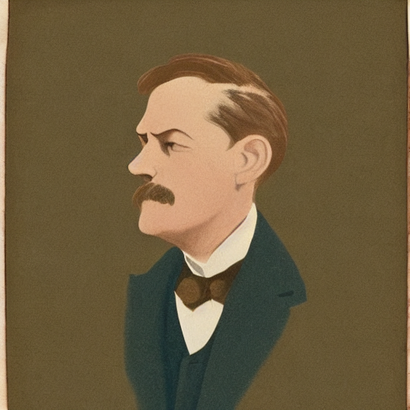
portrait · semilla 42
3.33 s · 2676 MiB
Victorian detective mystery, 1924 England, muted dark teal and warm brass palette, atmospheric cinematic illustration, no text, no letters, no watermark. Head and shoulders portrait of a stern middle-aged male doctor in a dark three-piece suit, white shirt, neatly combed brown hair, inside an English manor, single person.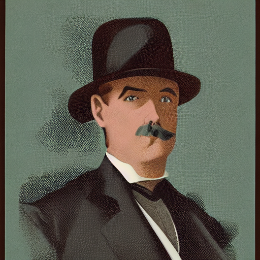
portrait · semilla 123
3.33 s · 2676 MiB
Victorian detective mystery, 1924 England, muted dark teal and warm brass palette, atmospheric cinematic illustration, no text, no letters, no watermark. Head and shoulders portrait of a stern middle-aged male doctor in a dark three-piece suit, white shirt, neatly combed brown hair, inside an English manor, single person.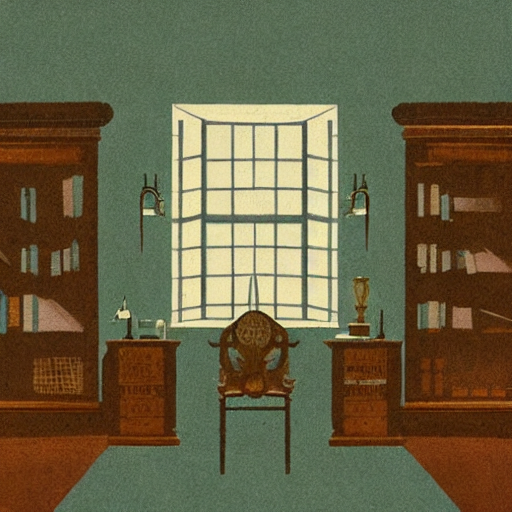
room · semilla 42
3.67 s · 2676 MiB
Victorian detective mystery, 1924 England, muted dark teal and warm brass palette, atmospheric cinematic illustration, no text, no letters, no watermark. An empty English manor study at night, mahogany desk, single porcelain teacup on desk, bookshelves, rain on tall windows, no people.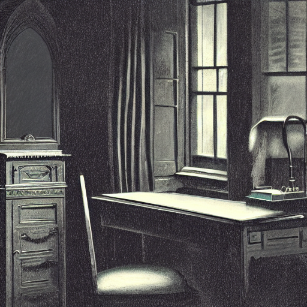
room · semilla 123
3.29 s · 2676 MiB
Victorian detective mystery, 1924 England, muted dark teal and warm brass palette, atmospheric cinematic illustration, no text, no letters, no watermark. An empty English manor study at night, mahogany desk, single porcelain teacup on desk, bookshelves, rain on tall windows, no people.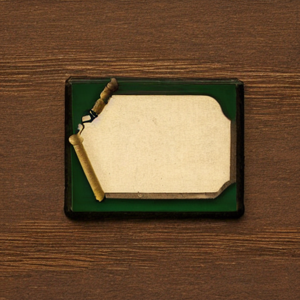
clue · semilla 42
3.38 s · 2676 MiB
Victorian detective mystery, 1924 England, muted dark teal and warm brass palette, atmospheric cinematic illustration, no text, no letters, no watermark. Evidence photograph, a single empty small amber glass medicine vial on a dark wooden table, centered isolated object, blank paper label, no writing.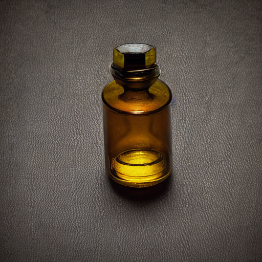
clue · semilla 123
3.34 s · 2676 MiB
Victorian detective mystery, 1924 England, muted dark teal and warm brass palette, atmospheric cinematic illustration, no text, no letters, no watermark. Evidence photograph, a single empty small amber glass medicine vial on a dark wooden table, centered isolated object, blank paper label, no writing.Resultados exploratorios. Las imágenes no están incorporadas como pistas canónicas. Sin control adicional, la generación puede añadir o cambiar detalles. Los rótulos y las iniciales de las pistas deberían componerse de forma determinista.